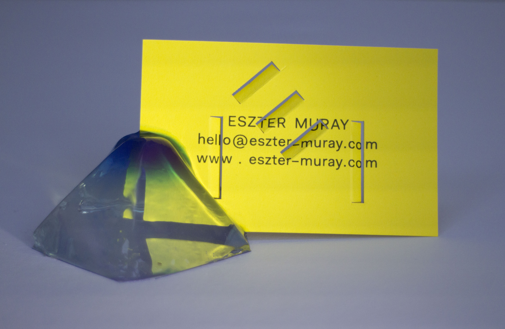

Hello and welcome.
Come, try my tasty taster menu of work. ← To start ← click any of
the shapes on the right. ← ← ← ← ← ← You can find out more about
me
here
and find some of my other work
here.

Who are you?
Hi, I am Eszter, I am a member of Animorph co-operative, and have
been working as a designer for the last 12 year. I currently
specialise in UX and UI for extended reality, but my interest and
experience encompass: branding, print, and spatial projects. You
can find my CV
here. A lot of my recent work is on our
site.
Why do you want to join FAC?
I have been long interested both in FAC and programming. I dabbled
in Processing and Arduino at Uni, but never to a really solid
level. At work I occassionally code macros in js, make node based
Blender models and animations, as well as Unity shaders and amends
to Unity gameplay in C#. I would like to get actually good at
coding so I can use it as a medium in my personal and professional
work. Making this website made me really keen to understand how to
actually handle data, and build efficently, rather than somewhat
randomly. I would ideally like to become a creative technologist,
so that I can leverage my skills in design still.
What could you bring to FAC?
I would be more than happy to share some UX and typography
knowhow. I could also sow some fringe ideas around coops, webart,
and obscure dutch digital design trends as needed.
